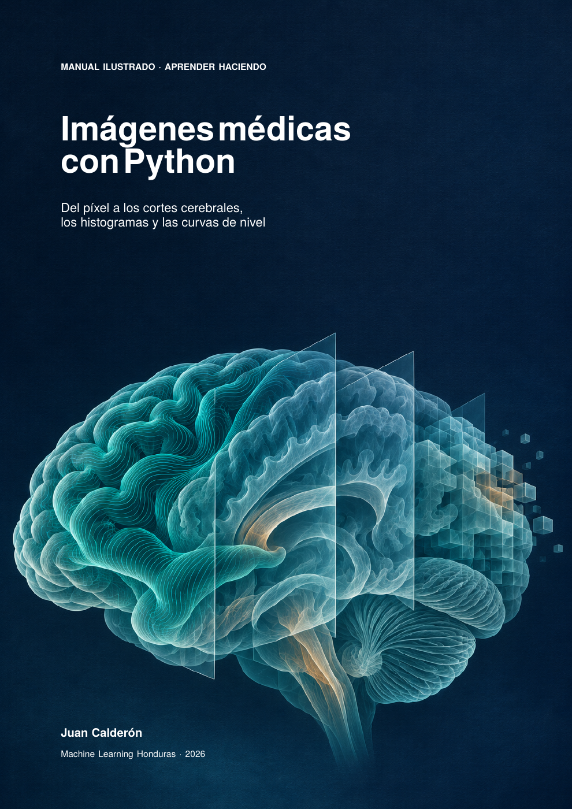

Una imagen es un arreglo
Tres planos, píxeles, vóxeles y una plantilla pública. Primera salida del cuaderno.
Taller introductorio · 60 minutos
Imágenes médicas con Python
De una imagen del cerebro a los números que la construyen. Aprende a explorar cortes, interpretar histogramas y comparar filtros, paso a paso.
Navegador + internet · CPU · Sin conectar tu Drive al cuaderno

Antes del taller
No necesitas experiencia en imágenes médicas. Repasaremos cómo ejecutar una celda de Python y qué significan sus resultados.
Entra en Colab con tu cuenta de Google. Para conservar tus cambios, usa Archivo → Guardar una copia en Drive. No hace falta montar Drive ni dar acceso a tus archivos.
Pulsa el triángulo a su izquierda o Mayús + Enter. Espera a ver los tres cortes del cerebro. La preparación inicial puede tardar; utiliza el entorno normal de CPU.
Abre el explorador visual y cambia el contraste. ¿Se modifican los números del histograma? No es necesario leer todo el manual antes de asistir.
Lectura previa opcional: hojea las imágenes y la introducción a MNI152 y Nilearn del manual ilustrado. El libro es una referencia para volver a cada concepto con calma.
Durante el taller
Observa una salida, cambia un parámetro y explica la diferencia. Las celdas incluyen instrucciones y respuestas para continuar a tu ritmo.
Tres planos, píxeles, vóxeles y una plantilla pública. Primera salida del cuaderno.
Índices y milímetros. Cambiar la ventana de contraste sin cambiar los datos.
Histograma, fondo, percentil 90 y máscara. Un umbral no identifica por sí solo un tejido.
Líneas que unen valores iguales, trazadas sobre un corte real del cerebro.
Ruido reproducible, suavizado y Sobel. Qué se conserva y qué se pierde.
Tres preguntas resueltas y un puente hacia el procesamiento previo al ML.
Tu mesa de trabajo
Para practicar en la sesión
8 celdas de código, salidas guardadas, explicaciones y ejercicios con pistas y soluciones.
Abrir en Colab · Descargar cuadernoPara seguir la explicación
Diapositivas visuales con preguntas y notas para el instructor. También disponibles sin conexión.
Ver en el navegador · PDF · PowerPoint editablePara experimentar sin Python
Cambia el corte, el contraste y una máscara por percentil. Compara la imagen con su histograma.
Abrir explorador · Guardar para usar sin internetPara estudiar después
Un recorrido más amplio por matrices, histogramas, curvas, media, mediana, ruido y bordes. Reserva varias sesiones.
Abrir versión completa · Descargar cuaderno
Biblioteca del taller
95 páginas, 8 capítulos, 15 tutoriales y 31 figuras diferentes. Conceptos, código, salidas e interpretación; incluye ICBM152, Nilearn, formatos médicos y anonimización.
Pausa para pensar
Estas preguntas también sirven para repasar al terminar. Abre una pista antes de consultar la respuesta.
El histograma cuenta los valores de la matriz original. La ventana decide qué gris se usa para dibujar cada valor.
No, si sólo cambias vmin y vmax al mostrar la imagen. Los números originales siguen iguales y sus frecuencias también. Un filtro sí calcula nuevos valores; entonces el histograma puede cambiar.
Piensa en varios píxeles que comparten el valor del umbral. La comparación incluye todos los que cumplen valor ≥ p90.
No necesariamente: los empates pueden superar el 10 %. En el corte axial k=46 de esta copia se seleccionan 523 de 4 859 valores sin fondo: aproximadamente 10,76 %. La máscara es una selección numérica, no una clasificación anatómica validada.
El ruido genera cambios bruscos, pero los detalles pequeños también. El filtro no sabe cuál de ellos deseas conservar.
No. El suavizado puede reducir bordes causados por ruido, pero también borrar detalles o juntar estructuras. Compara con la misma entrada y escala de visualización. Elegir un parámetro requiere definir qué información interesa conservar.
Si algo se detiene
Inicia sesión en Google y espera a que termine la primera celda antes de ejecutar otra. No selecciones GPU. Si hoy no puedes ejecutar, las figuras ya están guardadas en el cuaderno y puedes usar el explorador para comparar imágenes.
Una celda utiliza variables creadas antes. Ejecuta de nuevo desde la primera y sigue en orden. Cambiar un parámetro no actualiza automáticamente las salidas de celdas posteriores: también debes volver a ejecutarlas.
Descarga previamente la presentación PDF y el explorador HTML. El explorador incluye sus datos y funciona al abrir ese archivo en tu navegador. Para ejecutar Python localmente, descarga el repositorio completo e instala sus bibliotecas siguiendo el README; esa preparación inicial necesita internet.
Aprendemos a representar y procesar imágenes antes de aplicar aprendizaje automático. Usamos una plantilla pública de referencia, no pacientes independientes. No entrenamos un modelo ni hacemos una evaluación diagnóstica. En estudios reales, convertir DICOM a NIfTI no anonimiza por sí solo los datos.
Material docente de Juan Calderón para la Escuela de Machine Learning y Data Science en Honduras 2026. La fecha y el título siguen el programa consultado el 23 de noviembre; consulta allí posibles cambios.
El acceso mediante presentación, Colab, ejercicios y repositorio sigue la organización observada en los materiales de la escuela, incluidos los de Edith Natalia Villegas y Daniela Pérez. Este sitio es el recurso del expositor, no la web institucional ni una certificación de la organización.
Imágenes: plantilla T1 MNI152 distribuida por Nilearn 0.12.1, remuestreada a 2 mm. Procedencia, versión, atribuciones y condiciones de McGill en Fuentes y licencias. La portada del libro es una ilustración conceptual; las figuras científicas se calculan a partir de datos documentados.